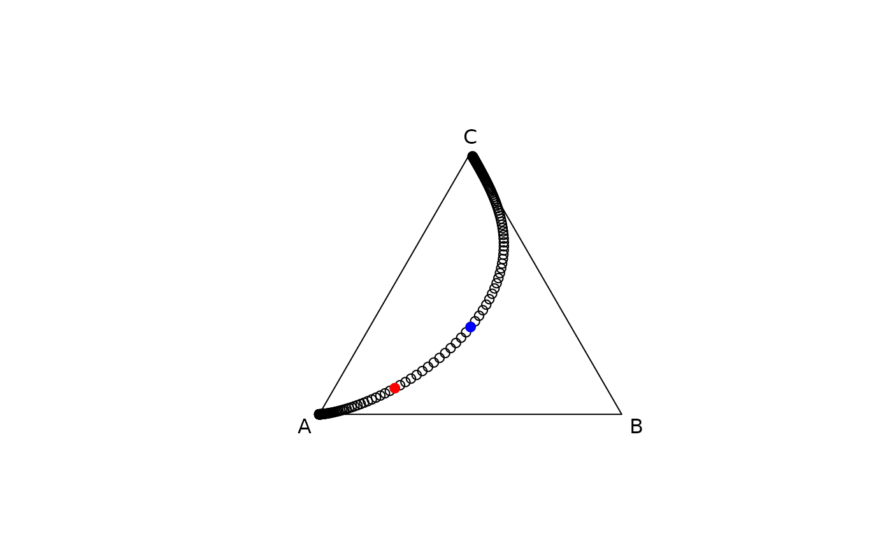

Create a linear path in the simplex by defining a direction and a step size
Source:R/CoDa_seq.R
CoDa_path.RdCreate a linear path in the simplex by defining a direction and a step size
Usage
CoDa_path(
comp_direc,
comp_from,
step_size = 0.01,
n_steps = 100,
add_opposite = FALSE,
dir_from_start = FALSE
)Arguments
- comp_direc
A numeric vector, defining a direction in the simplex
- comp_from
A numeric vector, an initial point in the simplex - defaults to a balanced composition, which represents the origin in the simplex
- step_size
A numeric, indicting the step size
- n_steps
A numeric, indicating the number of steps to be taking from
comp_from- add_opposite
A logical, if
TRUEsteps in the opposite direction are also computed- dir_from_start
A logical, if
TRUEthe direction is calculated from the difference betweencomp_fromandcomp_direc
Details
The function is very similar to CoDa_seq().
However, of drawing a line between a starting and end point it uses only a starting point and a direction.
Examples
# three steps that go from the origin towards the defined direction
comp_direc <- c(A =.4,B = .35, C= .25)
CoDa_path(comp_direc, n_steps = 3)
#> A B C
#> 0 0.3333333 0.3333333 0.3333333
#> 1 0.3352914 0.3339868 0.3307219
#> 2 0.3372497 0.3346303 0.3281200
#> 3 0.3392082 0.3352641 0.3255277
# we can draw the path that is defined by this direction
comp_direc <- c(A =.4,B = .35, C= .25)
compositions::plot.acomp(CoDa_path(comp_direc,n_steps = 10))
compositions::plot.acomp(CoDa_path(comp_direc,n_steps = 100))
compositions::plot.acomp(CoDa_path(comp_direc,add_opposite = TRUE))
# using the same direction we can draw a new path that does not go through the origin
comp_direc <- c(A =.4,B = .35, C= .25)
comp_from <- c(.7,.2,.1)
compositions::plot.acomp(CoDa_path(comp_direc, comp_from,n_steps = 10))
compositions::plot.acomp(CoDa_path(comp_direc, comp_from,n_steps = 100))
compositions::plot.acomp(CoDa_path(comp_direc, comp_from,add_opposite = TRUE))
# the balanced composition does not define a direction by itself
comp_origin <- c(A = 1/3, B = 1/3, C= 1/3) # corresponds to a zero vector in real space
if (FALSE) CoDa_path(comp_origin, comp_from,add_opposite = TRUE)
# with the dir_from_start option the direction is derived
# from the simplex line connecting two compositions
path_origin <- CoDa_path(
comp_direc = comp_origin,
comp_from = comp_from,
add_opposite = TRUE,
dir_from_start = TRUE,
step_size = .1)
compositions::plot.acomp(path_origin)
compositions::plot.acomp(comp_origin, add = TRUE, col = "blue", pch = 19)
compositions::plot.acomp(comp_from, add = TRUE, col = "red", pch = 19)
